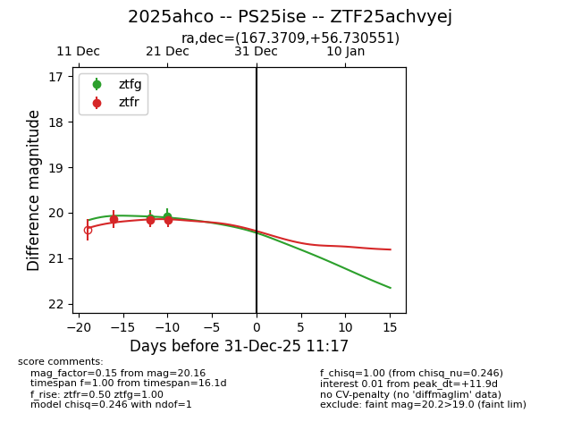
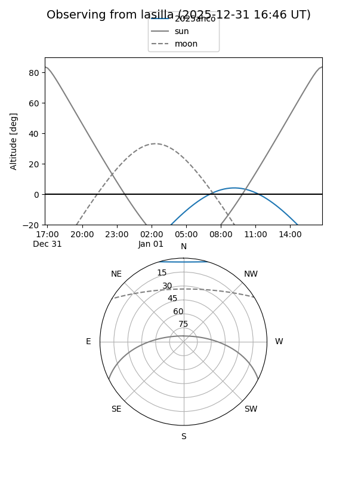
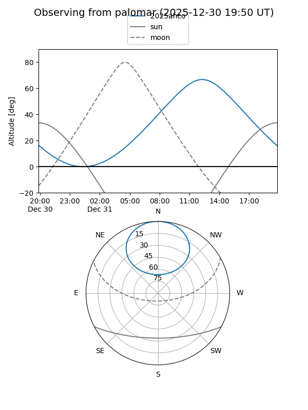

2025ahco
Target 2025ahco at 2025-12-25 00:05
Aliases and brokers:
FINK: fink-portal.org/ZTF25achvyej
Lasair: lasair-ztf.lsst.ac.uk/objects/ZTF25achvyej
ALeRCE: alerce.online/object/ZTF25achvyej
TNS: wis-tns.org/object/2025ahco
YSE: ziggy.ucolick.org/yse/transient_detail/2025ahco
alt names
ZTF25achvyej (ztf,fink_ztf)
2025ahco (tns,yse)
PS25ise (panstarrs)
Coordinates:
equatorial (ra, dec) = 167.3709,+56.73055
equatorial (HMS+DMS) = 11:09:29.02,+56:43:49.98
galactic (l, b) = (147.4188,+55.28114)
Flags:
Photometry:
last ztfg=20.07, ztfr=20.16
2 ztfg, 3 ztfr detections
Lightcurve

Visibility


Additional plots